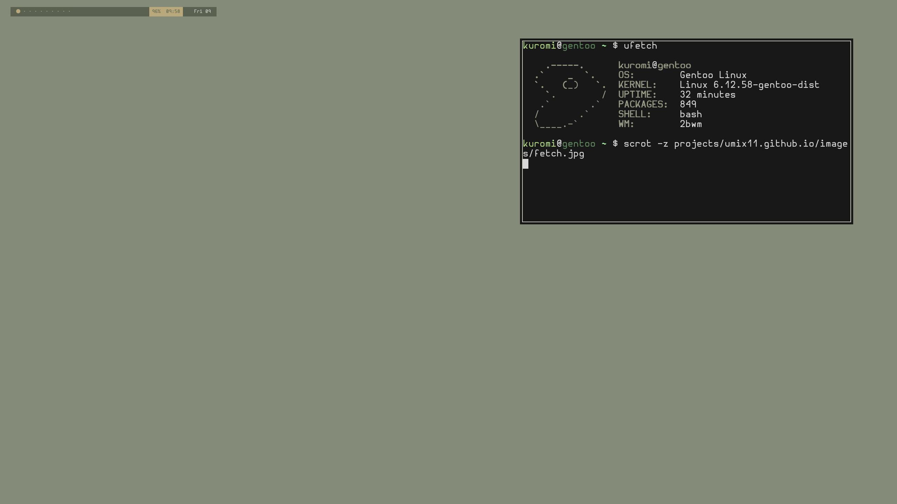

I wanted to try hevel wm(wc)
2026-08-01
I wanted to try hevel wm, bc im a big fan of dérive linux. But i have one problem: nvidia. For X11 no matter what card u use, its just works, while you need to pour lead into your urethra just for launch wayland.

Yes, you can tell me "This is your issue, just buy new laptop", BUT. Wayland is trying to be "X11 replacement", then what the fuck? If X11 is "depricated", and i cant use wayland, i must stay in the tty? Thats why i have chosen X11.